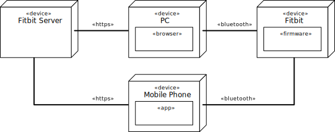
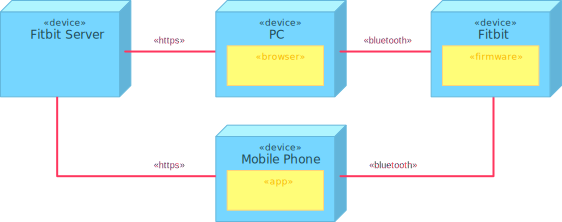
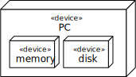
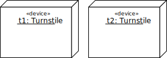
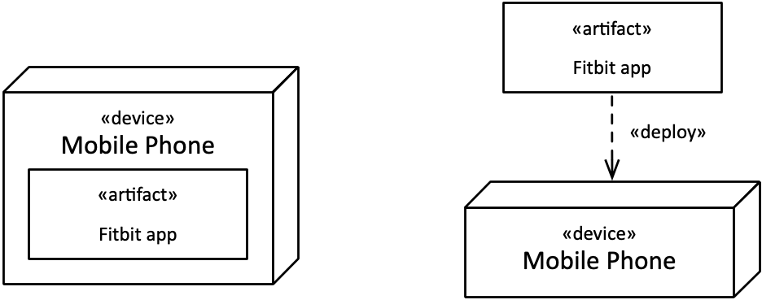
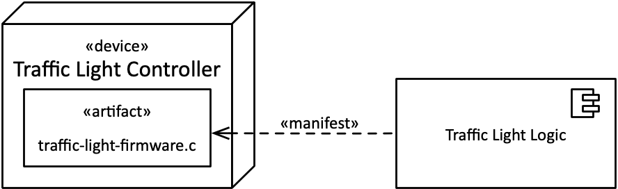
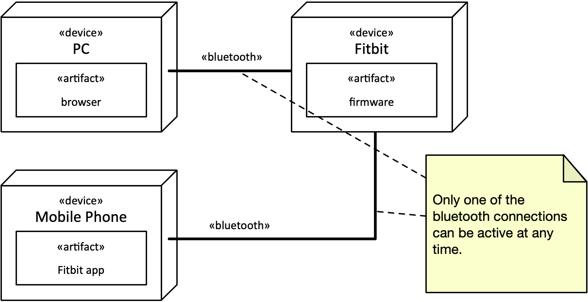
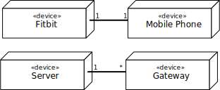

In the following unit, we will first look at the task of modeling in general. In the second part, we will learn the first diagram type: deployment diagrams. They are perfect for getting an overview of the parts of the system, which software runs on them and how they communicate.
Learning Goals
The learning goals specific for this week are the following:
Be aware of the overall importance of modeling in engineering.
Understand what constitutes a model.
Recite different properties of models.
Create deployment diagrams.
Decide which elements of a deployment diagram are relevant and chose a suitable level of detail.
For the Semester Project
In the semester project you will provide a systems specification, which is a model, and most of your effort lies in the activity of modelling.
You will often need to decide which information to include, and what makes a good model.
The second part of this unit about deployment diagrams is also directly relevant as you need to provide several iterations of your system as a deployment diagram.
The Problem
You are an engineer and should build a new system, an information and communication system for a new airport. You start coding on your laptop, and you manage to create the system all by yourself, in one long session. You think for yourself that Python is a really powerful programming language, and that this programming course really payed off. The next day, a bit tired, you send the code to the airport people and they happily accept your system. Some days after, they send you the money.
Doesn't this sound like a nice story? Unfortunately, it's bullshit. --- Why?
Systems are rarely created by a single person. Most systems are the effort of a team of developers, or rather several teams of developers, changing over time.
Most systems are not just built once, but maintained, extended and adapted over many years.
In this process, the code of the system, that is, the machine instructions needed to run it, are only one part of the descriptions and specifications that are created throughout the entire lifecycle of a system. With lifecycle we mean from the beginning of its conception, the idea, its creation and the following maintenance. During these phases, engineers create many documents that describe different aspects of it. Some descriptions have the purpose to make new programmers understand what has already been built and how the different parts of the system work together. Other descriptions are suitable to simulate the system, so we can check it for important properties like safety, security or performance. Yet again other descriptions are only created temporarily, before making a technical decision.
Modeling
Creating descriptions of something means to create a model, and the activity is called modeling. In this course, we learn how to apply modeling to systems, so that we can create high-quality systems.
Models are Everywhere
Modeling means to represent something so we can find out more about it, play with it and work on it. Many tasks of engineers are related to models. In some disciplines this is more obvious than others. For example:
A plan (or model) of a plane.
A plan (or model) of a building.
A plan (or model) of a software system.
Models allow to do a crash test on a car using a computer simulation, to check how fire and smoke propagate through a building, and they allow to study how a building looks before it is even built. If we were doing engineering without models, we would only be able to work with the real thing. As you can imagine, this is often impossible, prohibitively expensive or unethical. But models are also useful in less dramatic and obvious cases. We are so used to working on models that we often don't think about it.
Let's have a closer look what models are and which properties they can have:
Models can be physical, like a wooden model of a car, or digital, like a digital plan of a building. A diagram on a piece of paper or whiteboard is somewhere between these two.
Models can be textual descriptions, like a step-by-step description of a business process, or expressed graphically, like a flowchart.
Models can be expressed by mathematical formulas, like Newton's law of gravity that is a model for how masses attract each other.
This list is not intended to be complete, but should just illustrate the wide variety of models there are. Depending on what we want to find out, we can use different models. The same concept can have several models at the same time, each showing different aspects of it.
Depending on what we want to find out, a model may also cover some aspects very well, while being less precise on others.
Newton's law of gravity, for instance, is a good model to describe the movement of the planets, but it is ultimately not as precise as Einstein's relativity theory, which is another model that involves gravity.
A crash test model for a car is suitable to understand how the car behaves in an accident, but is useless when we want to decide which colors we should chose for the dashboard buttons.
Models of Software
Of course, like we can have models of planes and buildings, we can also have models of a system that mainly consists of software. But there's one thing that is special with software: Software is made up of digital artifacts, and therefore virtual in nature. (Virtual means you can't touch it.) While it is easy to distinguish the model of a house from the house itself, it is harder to distinguish the model of a piece of software from the software itself. One could also argue that code itself is a model, since it describes a way of executing an algorithm.
This is why we sometimes confuse software models and programs. In some cases, the lines are even more blurry when we generate code from models automatically, or take the model and interpret it by a machine that then effectively executes it. But more on that later.
Why Modeling Software?
Let's think one again, why we use models in general, and why models make sense also for software:
We use models for planning ahead and estimate how long the construction of something will take. With software, we also need to plan ahead and plan who is doing what and when. Is it useful to have models for that? Of course!
Study properties and behavior of a system before it is built. For software, this means for instance that we can play with a model to talk through some use cases of a system without building the real thing. Sometimes such models are done only with paper. Sometimes they are programmed quickly but without all functions behind the buttons. These models are also called mock-ups.
When a model has a more mathematical or formal character, we can also simulate it or analyze it thoroughly.
One obvious, but often underestimated value is communication with other developers, or sometimes customers.
Altogether, through modeling all participants in a development project can gain a better understanding of the system --- before it's built, during its constructions, and afterwards during maintenance and extensions or adaptations.
Where Does Modeling Happen?
We have seen that models come in a variety of forms. There's no specific property models needs to have to be called model other than being a model of something. If it represents something, it's a model. If we can use it to find out more about what we are working on, it's a useful model. The act of modeling can therefore take place in different forms:
In your head. This is kind of obvious. Engineers have a representation of the system they work in their heads. These are models, too. The only problem of these models is that they are local and hard to transfer from one developer to another.
At a whiteboard or on a piece of paper. When discussing, engineers often draw spontaneously to illustrate a part of a system, so that they can understand a system aspect better or communicate it to other developers.
In a general-purpose graphical editor. For documentation or planning, engineers create more detailed models using graphical editors. General-purpose means that the editor is not specific for software but for drawing diagrams in general. Text can also be part of that description.
In a modeling editor. In contrast to a general-purpose editor, a modeling editor knows more about the type of models you want to create. With this knowledge, it can for instance offer connections between modeling elements, or check if there are errors in the model.
Any of these models can be valuable, and one is not inherently more valuable than another. Models are always as valuable as they contribute to clarify and increase system quality. A model is not more valuable just because it is done in a tool, its value depends on its context.
With regard to this course, we focus in the first three: You will be able to improve the models you have of a system in your own head. I also want you to get much better at just taking a pen during a discussion and sketching a relevant model on a whiteboard to show to some colleagues. This is an underestimated skill. Finally, once you should produce a delivery document or plan ahead your project in greater detail, you will also be able to create some decent diagrams.
UML --- Unified Modeling Language
There are lots of languages, notations or standards for modeling software. In this course, we will use the Unified Modeling Language (UML) as a basis. Some of you have already heard about UML, and among all modeling languages it is probably the one you will come most likely into contact with later in your job.
This is because UML is not a single language, but a selection of notations that have each been around for a while. Sequence diagrams or state machines, for instance, have existed for a long time before UML. UML tries to unify them.
However, UML itself is not really important in this course. This is not a UML course. It's a course about designing systems, and we happen to use UML notation. UML has several hundred different modeling elements and eleven different graphical notations. We will look only at the following:
Deployment Diagrams
Use Case Diagrams
State machine diagrams
Interaction Diagrams
For each of these diagrams, we only look at a subset of the modeling elements, and shy away from some more obscure constructs. The course is therefore not very syntax heavy. However, you will need to apply the syntax consistently. This is because we want to convey information with the diagrams. We want the diagrams to be valuable. For that reason, we need to stick to some conventions. Therefore, we are strict with the syntax that we will use.
Degrees of UML
Depending on how and when we create our models and which details they show, we can use UML in fundamentally different ways. We can roughly outline three degrees, levels or modes how UML can be used:
UML as Sketch: This means to use UML in a very informal way, maybe without paying too much attention on the detailed syntax.
The sketches can be done on a whiteboard during a discussion or a piece of paper.
The point may only be to illustrate a certain point and then throw the diagram away again.
A UML sketch of a system can also be a simple diagram in a document that highlights some aspect of a system.
This kind works both forwards and backwards, this means we can either first sketch the system and then build it (forward) or first program the system and then illustrate it (backwards).
UML as Blueprint: At this level, modeling can also happen forward or backward, but the models are much more complete and describe to a much higher degree what has been built or what needs to be built. Plans can be made based on these models, and teams can share work based on them. Often, UML as a blueprint is supported by special tools for computer-aided systems engineering (CASE).
UML as Programming Language: Finally, at this level UML is used like a (graphical) programming language from which the system can be implemented or executed directly. This implies that UML is used on a very detailed level. There exists an "executable" version of UML that has exactly this as an aim.
Depending on whom you ask, you may hear very strong arguments for any of these ways of using UML. Which one is the "right" one depends on many factors, and may differ from project to project and development team. But independent of that, any of these levels can produce models that have some value: "Just sketching" doesn't mean a model is not valuable. In this course, we are going to use UML mostly as a blueprint and as a sketch.
Views and Diagrams
The model of a building can have different views, like showing the building from different perspectives. There can also be plans for different parts of the infrastructure, like one plan showing the electricity, one focusing on ventilation and another on fire safety.
Similarly, the UML model of a system provides different views on it using various diagrams. These diagrams are like a window into the model. For instance, a physical view can show how a system is organized into nodes and distributed (deployment diagram). Another dynamic view can show how a component behaves in terms of state machines and interactions. Yet another structural view can show how the use cases in a system are organized.
These different views all provide perspectives on the same model, and ideally, are consistent with each other.
Deployment Diagrams
Deployment diagrams are useful at all stages of development. They provide a physical view of the system, and show the files and the devices they run on. In particular, they show:
the coarse structure of a system
which devices are involved
how devices are connected to each other
which devices run which software
Below is an example for a deployment diagram, showing the elements of a fitness tracker (here a Fitbit) and how it works together with a mobile phone and the server backend.

What can we learn from this diagram?
To the left, there is the Fitbit server, which is connected via HTTPS to a PC and the mobile phone of a user.
On the PC, a browser is running.
On the mobile phone, we have an application.
The Fitbit is connected to PC and mobile phone via Bluetooth.
When we apply some color, we can see that deployment diagrams basically consist of three types of modeling elements:
Nodes that represent hardware devices and software execution environments (in blue). In other words, locations in the system that can execute software.
Connections that represent communication between nodes (in red).
Software artifacts that are assigned to nodes (in yellow).

Nodes: Devices
Devices are shown as a 3D-box with «device» printed at its top. The funny brackets are called guillemets and are each a single character. This is a notation for stereotypes, which are a kind of marker in UML.
Examples for devices are:
PC
Raspberry Pi
Mobile Phone
Tablet
iPhone
server
gateway
...
These device types are not built into UML, you can decide on your own. Which ones make sense depends on your project. Is it relevant and informative that you are talking about a Raspberry Pi? If yes, fine! If it doesn't matter, use a more generic device type.
Nodes: Execution Environments
Software does often not directly run on hardware, but on some execution environment. If you want to show this, you can use a node (again with 3D effect) and the stereotype «execution environment».
Examples for execution environments are runtime environment,
application server, web server, operating system, Java virtual machine (JVM) or a container system like Docker.
Nested Nodes
In some cases it makes sense to show nested nodes.
You can show a device inside a device, for instance when you want to show a disk inside a PC or a trusted computation element in a phone. Other hardware elements within a device can be memory.
You should only show such elements if there is something special you want to point out.
Like a special type of memory that is critical for the system, or the trusted computation element that enables new use cases.
Usually, execution environment are contained within devices, since software needs to run on some hardware. The only reason not to show a device and have an execution as its own top-level element is when the hardware it necessarily runs on is obvious from the context or not important at all. One thing is sure, however: execution environments cannot contain devices.
In some cases, you might want to points out that an execution environment is nested inside another execution environment, like when you want to point out that Python runs within Docker, in a Linux operating system on a server. Again---assess for your specific case which information is relevant.

Showing Node Instances
Sometimes you want to show several nodes of the same type, but want to express that these are different instances. Example, an airport gate with several passenger turnstiles, that are physical identical. For that, you just include the instance name in front of a colon, like t1: Turnstile. In addition, you underline to make clear that you refer to a specific instance.

Communication Paths
When two nodes communicate, they are connected by a solid line. This line can be labelled with a stereotype that says something about the way of communication, by referring to a standard or a protocol, as for instance:
«http»
«mqtt»
«amqp»
«tcp/ip» or «tcp»
«bluetooth»
«CoAP»
Artifacts
The software itself that runs on hardware and inside execution environments comes in the form of artifacts. They are shown as simple rectangles, with «artifact» written at the top. They can represent any artifact we find in software, for example:
Database
firmware
device driver
configuration files (.xml, .txt, .properties,...)
source files (.java, .py, .c)
library files (.dll, .jar)
executable files (.exe, .jar, .c)
Deploying Artifacts
Software artifacts run within an execution environment or directly in a hardware nodes. There are two ways to assign a software artifact into a node:
Simply by drawing it into the node, that means, graphically by nesting.
By connecting them with a dashed line arrow labelled «deploy»
Below you see the two ways of deploying an artifact into a node. Both are semantically equivalent (they mean the same thing), but the graphics are different. Depending on how many artifacts to deploy and other layout constraints, either of them can be more compact and practical to use.

Manifestation
The software in an artifact can itself represent something we have modeled, like a UML component. This means that an artifact manifests other modeling elements.
In the example below, we show that the UML component Traffic Light Logic is manifested by the artifact traffic-light-firmware.c, using a dashed arrow with the stereotype «manifest».
This means that there is a UML description of a traffic light encapsulated by the component Traffic Light Logic. This can be for example a state machine that describes in which sequences the traffic light cycles through red, yellow and green. (We will work with state machines later.) The state machines and the component, however, are only descriptions but cannot be executed on their own. For that, we need the code provided here by the artifact traffic-light-firmware.c, which implements for instance the component and state machines for the traffic light.

Hint: The difference between artifacts and nodes may appear subtle in some cases.
Nodes that are devices describe physical pieces of hardware that you can touch. Artifacts, on the other side are often files, like source files or executable files for a program.
They are real, but you cannot touch them.
Execution environments, which are nodes, are a bit more subtle. You cannot touch them, but
they provide a place of executing software, which comes in the form of artifacts.
Notes
Similar to comments and documentation in source code, UML diagrams can contain notes. They can capture additional information that cannot be expressed by other elements.

Multiplicities
In some cases we can add useful information to the deployment diagram by showing how many instances of a pair of nodes are connected with each other.
A multiplicity specification is a tuple in the form n..m where n denotes the lower bound and m the upper one. (This implies that n is smaller than m.) To keep the upper value unbounded, we use the asterisk *. This leads to the following possible combinations in practice:
Multiplicity
Shorthand
Meaning
n..m
Minimum n elements, maximum m. (m>n)
0..1
optional value
1..1
1
exactly one
0..*
any number of elements, "many"
n..*
n or more
n..n
n
exactly n
The first column shows the multiplicity in n..m format. The second columns shows an equivalent shorthand notation if there is one, and the third column how the multiplicity it to be understood or pronounced in words.
We can use these multiplicities at both sides of a connection between nodes.
If no multiplicity is specified, it means *, which implies many.
In most practical cases, you don't need to worry much about the multiplicities because they are often implicitly clear from the context. But in some cases you can emphasize details that you consider important. Typical examples are:
One Fitbit only can sync with a single mobile phone, emphasized by a one-to-one relationship.
One server is connected to many gateways.
If the number varies at runtime, use 0..* or * in short, just implying many.

Containment
We have seen above that some nodes in a deployment diagram can contain other nodes, depending on the node types.
The following containments are typical:
An execution environment can run in a device.
An artifact is deployed in a device.
An artifact is deployed in an execution environment.
The following containments are also possible, but maybe less common. Use them if you want to show a detail that is important to point out, and consider if that makes sense.
A device can contain a device. For instance, a computer (device) can contain a harddisk.
An execution environment can contain another execution environment. For instance, a virtual operating system container could rund a Python runtime.
An artifact could be composite, like a file stored in an archive.
The following combinations make no sense:
An execution environment cannot contain a device.
An artifact cannot contain a device.
An artifact cannot contain an execution environment.
Overview of Elements
Communication Path
«TCP/IP»
«MQTT»
«AMQP»
«RMI»
«CoAP»
Nodes
«execution environment»
«application server»
«web server»
«operating system»
«device»
«server»
«gateway»
«desktop PC»
«artifact»
«data base»
«firmware»
«device driver»
configuration files
.txt
.properties
.xml
source files
.cpp
.c
.py
.java
library files
.dll
.jar
executable files
.exe
.jar
Optional Preparation
If you want, have a look at the following videos that show how to create deployment diagrams.